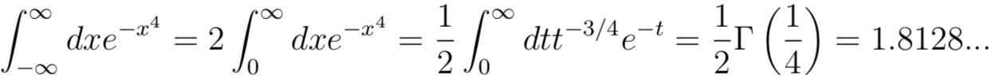

1) Το
πρόβλημα: Ο φύλακας ενός κτιρίου έχει οδηγίες όταν κυκλοφορεί για να
επιτηρήσει το κτίριο να περιμένει 10 λεπτά σε κάθε γωνία του κτιρίου
(αριθμημένες από το 1 ως το 4). Μετά από 10 λεπτά ο φύλακας θα πρέπει
είτε να μείνει στην θέση που βρίσκεται ή να μετακινηθεί στην γειτονική
γωνία του κτιρίου. Ωστόσο δεν μπορεί να κινηθεί διαγώνια μεταξύ της
γωνίας 1 και 4. Οι κινήσεις είναι τυχαίες και επομένως η πιθανότητα να
παραμείνει ή να μετακινηθεί σε μια από τις άλλες γωνίες είναι η
ίδια. Να γράψετε ένα πρόγραμμα το οποίο υπολογίζει την πιθανότητα
να βρίσκεται ο φύλακας σε κάποια κορυφή στην κατάσταση ισορροπίας. Το
πρόγραμμά σας θα πρέπει να τυπώνει τις πιθανότητες να βρίσκεται σε κάθε
κορυφή.
1------------------2
|
/ |
|
/ |
|
/ |
|
/ |
|
/ |
|
/ |
|
/
|
|
/
|
|
/
|
|
/
|
|
/
|
3------------------4
Το πρόγραμμα βασίζεται στη χρήση μαρκοβιανών αλυσίδων, τον
προσδιορισμό του πίνακα μετάβασης και τον πίνακα που αντιστοιχεί στη
σταθερή κατάσταση
Παράδειγμα του κώδικα μπορείτε να βρείτε στο lab11_prob01.cpp
2) Χρησιμοποιώντας τον αλγόριθμο Μetropolis να γράψετε ένα
πρόγραμμα το οποίο να δημιουργεί μία ακολουθία τυχαίων η
συνάρτηση κατανομής των οποίων είναι ανάλογη της exp[-x4]
στο διάστημα (-οο, +οο).
Να δοκιμάσετε το πρόγραμμά σας για 1000, 10000, και 100000 προσπάθειες.
Θα πρέπει αρχικά να βρείτε το κατάλληλο βήμα για να αλλάζετε το x ώστε
να έχετε περίπου 50% απόρριψη της μεθόδου και κατόπιν να
πραγματοποιήσετε για το βήμα αυτό 100000 προσπάθειες.
Θεωρήστε την συνάρτηση f(x) = C exp [-x4] όπου C είναι
σταθερά τέτοια που να κανονικοποιεί τη συνάρτηση. Η σταθερά αυτή δεν
είναι απαραίτητη στον αλγόριθμο Metropolis ωστόσο μπορούμε να την
υπολογίσουμε για να συγκρίνουμε τα αποτελέσματα με την κανονικοποιημένη
συνάρτηση κατανομής. Το κανονικοποιημένο ολοκλήρωμα μπορεί να εκφραστεί
συναρτήσει μιας Γ συνάρτησης κάνοντας την αντικατάσταση x4=t
οπότε θα έχουμε:

Συγκρίνετε το πρόγραμμά σας με αυτό στο lab11_prob02.cpp
3) Θεωρήστε το ολοκλήρωμα το οποίο παρουσιάζει ακρότατο ως προς την αρχή. Αν
χρησιμοποιήσουμε την Gaussian
και τον αλγόριθμο Metropolis μπορούμε να παράξουμε τυχαίους αριθμούς
σύμφωνα με την w(x,y). Γράψτε ένα πρόγραμμα το οποίο παράγει τους
τυχαίους αυτούς αριθμούς. Επιλέξτε το βήμα επιλογής του προτεινόμενου
σημείου σας τέτοιο ώστε ο ρυθμός αποδοχής των σημείων είναι μεταξύ 0.5
και 0.6. Κάντε ένα γράφημα του ρυθμού αποδοχής συναρτήσει του βήματος.
Για το βέλτιστο βήμα κάντε ένα γράφημα 5000 τυχαίων αριθμών που
δημιουργεί το πρόγραμμά σας (το γράφημά σας θα είναι
δυσδιάστατο).
Συνεχίστε το πρόγραμμά σας και με τους τυχαίους αριθμούς που
υπολογίζετε προσδιορίστε το ολοκλήρωμα Ι. Θα πρέπει να τυπώσετε την
τιμή του ολοκληρώματος που βρήκατε και το σφάλμα.
Στο πρόγραμμά σας θα πρέπει να μελετήσετε την εξάρτηση του
αποτελέσματός σας από το αρχικό σας σημείο καθώς και πόσα βήματα
προθέρμανσης θα πρέπει να κάνετε πριν αρχίσετε να συλλέγεται τα
αποτελέσματα της μεθόδου σας.
Συγκρίνετε το πρόγραμμά σας με αυτό στο lab11_prob03.cpp
|